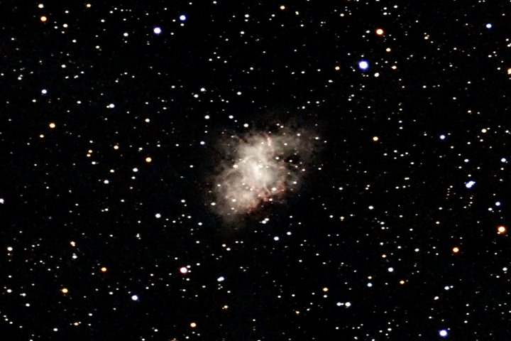
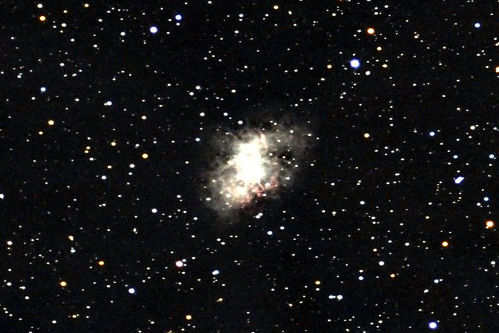
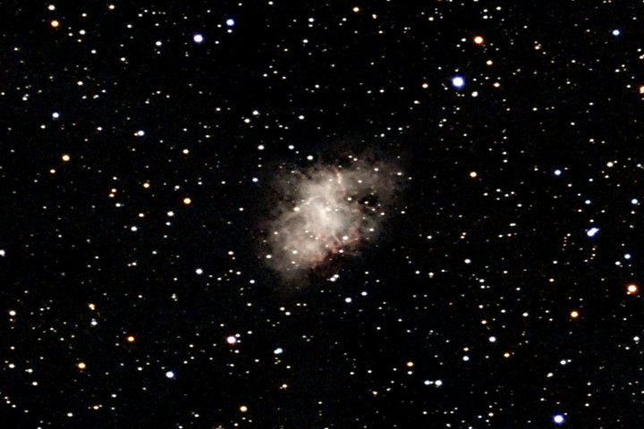
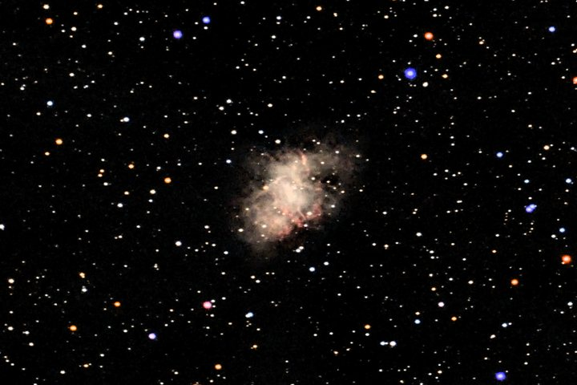
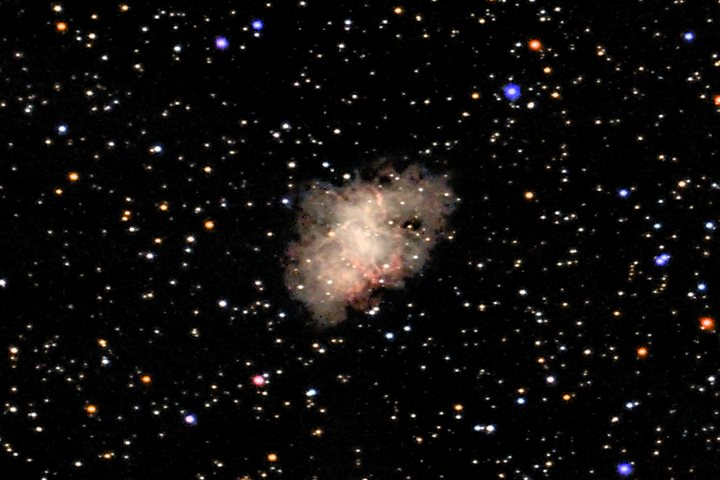
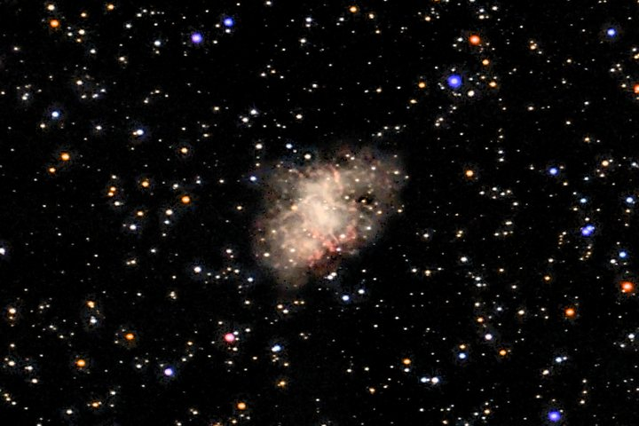
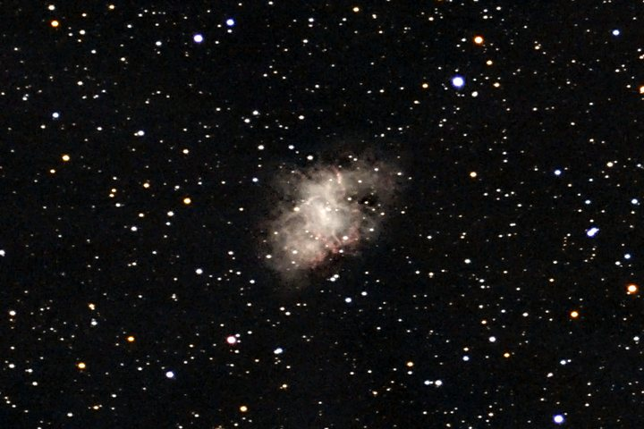
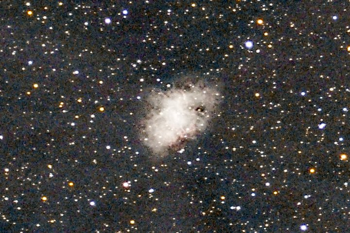
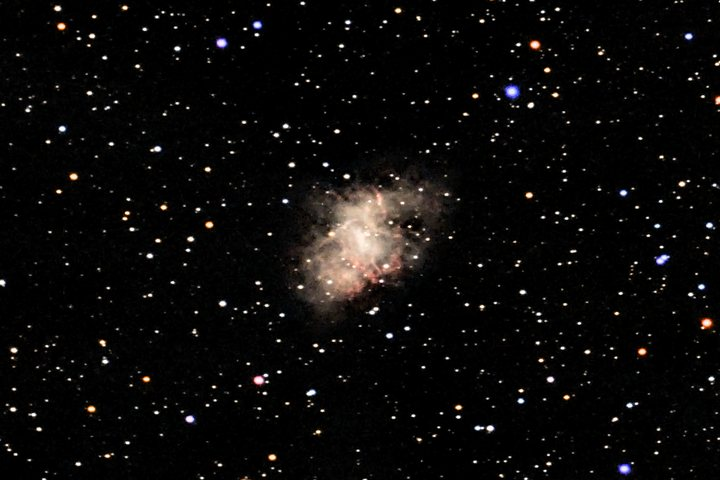
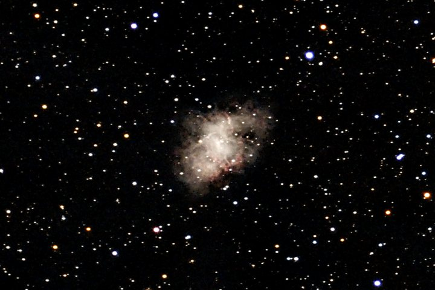

Compare any two
Pick a stretch for each side and drag across the image. The crop is 960×640 pixels around the Crab Nebula (M1) from a 133-frame, 44-minute Origin session, shown at three-quarters size.


linear ghsAll ten
Linear --stretch linear
No curve at all: each channel is scaled between a low and a high percentile, so display brightness rises in direct proportion to the light in the data.
Good for seeing how bright things really are relative to each other, and spotting a saturated core. Watch the core clip to white (1.6% of this crop) while the faint outer nebula stays invisible.

Arcsinh --stretch arcsinh
Linear for faint values, logarithmic for bright ones, with the black point at the sky and the white point at the brightest extended light.
Good for a simple, predictable look with a black sky; the classic astronomical display curve. Watch its fixed shape: it cannot trade faint against bright the way GHS can.
GHS --stretch ghs default
The generalised hyperbolic stretch with its strength, symmetry point and highlight protection chosen for the target (ghs_b, ghs_sp, ghs_hp in the saved config). Applied to each colour channel separately.
Good for most targets: it lifts the faint parts and protects the bright ones, and the advisor tunes it per target type. Watch bright cores and stars turning whiter than their true colour.

GHS, colour preserved --stretch-color preserve
The same curve applied to brightness only; every pixel keeps its ratio of red, green and blue (Lupton et al., 2004).
Good for true colour: the Crab's red filaments and the stars' colours survive into the bright parts. Watch very saturated bright colours, which are dimmed to fit the display range.

Masked --stretch masked
The GHS image, blended with a much stronger faint-signal curve through a smooth brightness mask, so the boost goes to faint structure and not to the sky or the bright core.
Good for faint outer nebulosity and galaxy haloes. Watch faint stars: they get the boost too, so the field looks busier.

Multiscale --stretch multiscale
Like masked, but with two masks: one for broad diffuse glow and one for fine filaments, each boosted by its own amount.
Good for nebulae with both a faint glow and fine filaments. Watch the same busier star field as masked.

Noise floor --stretch noisefloor
GHS whose strength is solved from the sky noise: the weakest curve that makes one standard deviation of sky noise span a fixed number of display levels. It ignores the target presets and sets its own black point.
Good for a consistent, honest look across very different targets, and judging how deep the data really goes. Watch the dark-grey sky with visible grain; that is intended.

Statistical --stretch seti
A midtones transfer function solved so the image's median lands at 0.20 of the display range, after Seti Astro's statistical stretch. It knows nothing about objects; it simply makes the typical pixel mid-dark.
Good for a diagnostic look at everything in the data: faint dust, gradients, noise. Watch the grey, grainy sky (median 0.21 here, against 0.005 for GHS); it is rarely the final look.

OKLab --stretch oklab
The GHS curve applied to lightness in the OKLab colour space, which is built to match how bright colours look to the eye. Hue and saturation are kept.
Good for colourful bright regions: unlike plain colour preservation, a saturated red core is not dimmed to half the brightness of a white one. Watch nothing in particular; on a mostly neutral field it looks like colour-preserved GHS.

CLAHE --stretch clahe
The GHS image plus contrast-limited adaptive histogram equalisation: brightness is equalised tile by tile, with a cap on how far contrast can be pushed, and blended in only where there is extended signal.
Good for structure inside a bright nebula or galaxy core. Watch a processed look if the target fills the frame; sky and stars are left alone.
The numbers
Measured on the crops above, display values from 0 (black) to 1 (white). The sky level is the median of the whole crop, which is almost all sky; "clipped" is the share of pixels driven to pure white.
| Stretch | Sky level | Mean | Clipped |
|---|---|---|---|
| linear | 0.045 | 0.081 | 1.64% |
| arcsinh | 0.006 | 0.042 | 0.51% |
| ghs | 0.005 | 0.040 | 0.55% |
| ghs, colour preserved | 0.004 | 0.039 | 0.68% |
| masked | 0.005 | 0.054 | 0.65% |
| multiscale | 0.006 | 0.056 | 0.65% |
| noisefloor | 0.043 | 0.072 | 0.55% |
| seti | 0.207 | 0.244 | 0.51% |
| oklab | 0.004 | 0.039 | 0.62% |
| clahe | 0.005 | 0.043 | 0.55% |
Masked and multiscale raise the mean by about a third over GHS while leaving the sky where it was: the extra brightness all goes to faint structure and faint stars. Noise floor and SETI raise the sky itself.
Which to use
- Start with the default
GHS, tuned per target by the advisor. Add
--stretch-color preserveif star colours or coloured nebulae matter to you, or useoklabfor the same with brighter saturated colours.- Faint stuff is missing
Try
maskedormultiscale. If you are not sure the faint stuff is really there, look atsetiornoisefloorfirst: they show the noise along with it.- It is cheap to try them all
The stretch is the last step.
--from-stack STACK.fits --stretch NAMEre-runs only the finishing steps on a stack you already made, with the early steps cached, so each try takes seconds. The FITS file is not affected by any of this: it stays linear.